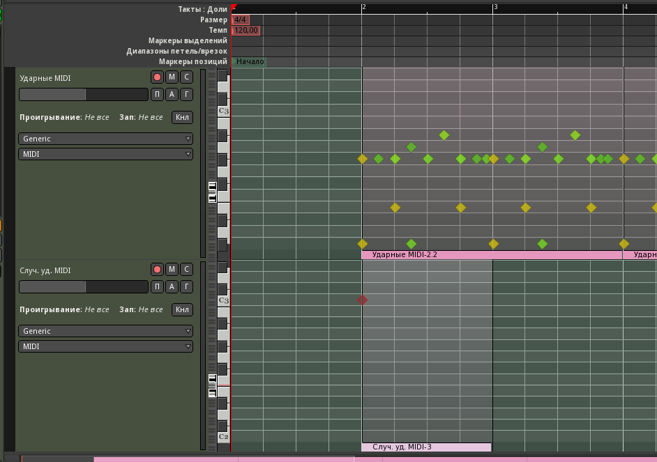
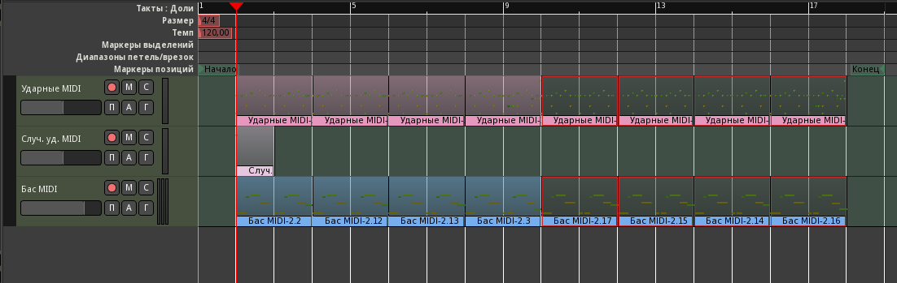

Музыкальная фраза кажется слишком короткой, поэтому растянем её на восемь тактов: разрежем регионы посередине и повторим первые два такта ещё дважды, оставив окончание. Перед этим сетку на панели инструментов переключим на Такты и установим режим редактирования Слайд, потому что в режиме Блок перемещение отключено. Перетаскиваются регионы инструментом Захват, за середину, копируются так же, но с зажатой кнопкой Ctrl.

И сразу же мы сталкиваемся с небольшой, но очень раздражающей проблемой, когда случайные ударники (как правило, крэши и некоторые сбивки) копируются вместе с основным ритмом туда, где им не место. Придётся создать для них отдельную дорожку под названием Случ. уд. MIDI. Подключим её к дорожкам с Fabla. Выберем десятый канал в свойствах, и перкуссивный режим представления. Фильтр тоже можно поставить, но не обязательно.
Теперь увеличим высоту этих дорожек мышкой или выделив обе дорожки ударных и нажав F. Ширина увеличивается колёсиком при зажатом Ctrl. Используя инструмент правки содержимого областей (E), выделим и удалим ноту крэша (нота C3) в начале самого первого такта на дорожке Ударные MIDI. Она автоматически удалится и на всех копиях региона.
Инструментом Рисование (карандаш, D) сделаем регион и воссоздадим ноту на дорожке случайных ударных.
Чтобы вернуться к обычной высоте дорожек, выберем их все по Ctrl-T, затем меню Дорожка/Высота/Обычный. Следующая партия, которую мы собираемся добавить, будет подкладом, и фраза всё ещё слишком коротка для неё. Поэтому продублируем все регионы, кроме крэша, чтобы получить 16 тактов.
